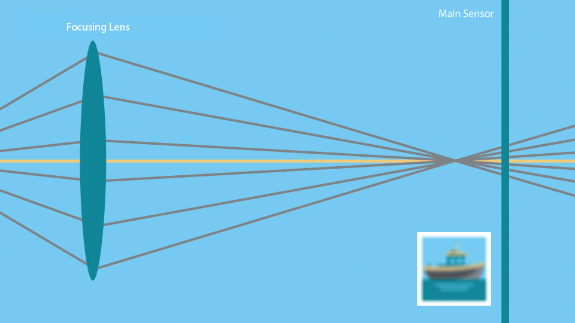
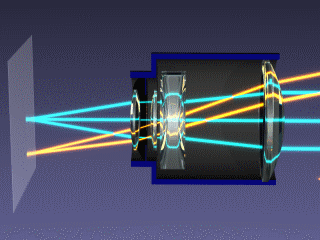
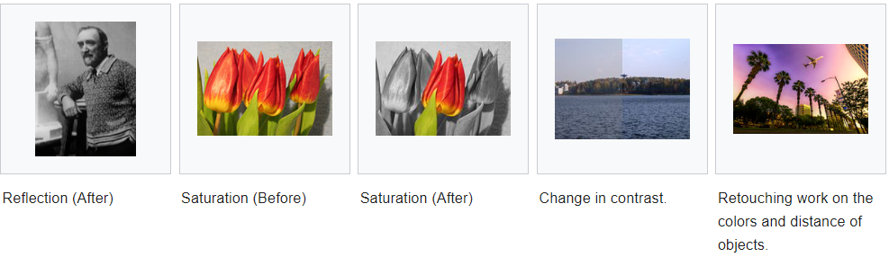

Camera Overview
The Qt Multimedia API provides a number of camera related classes, so you can access images and videos from mobile device cameras or web cameras. There are both C++ and QML APIs for common tasks.
Camera Features
In order to use the camera classes, a quick overview of the way a camera works is needed. If you're already familiar with this, you can skip ahead to Camera implementation details. For a more detailed explanations of how a camera works, see the following YouTube clip.

The Lens Assembly
At one end of the camera assembly is the lens assembly (one or more lenses, arranged to focus light onto the sensor). The lenses themselves can sometimes be moved to adjust things like focus and zoom. They might also be fixed in an arrangement for a good balance between maintaining focus and cost.


Some lens assemblies can automatically be adjusted so that an object at different distances from the camera can be kept in focus. This is usually done by measuring how sharp a particular area of the frame is, and then adjusting the lens assembly to find the peak sharpness. In some cases, the camera will always use the center of the frame for this. In other cases, a camera may also allow this target focus region to be specified. Some examples of this feature include:
- Face zoom: Using computer vision to detect and use one or more faces as the target.
- Touch to zoom: Enabling the user to manually select an area via the preview screen.
The Sensor
Once light arrives at the sensor, it gets converted into digital pixels. This process can depend on a number of things but ultimately comes down to two things:
- The length of time conversion is allowed to take. Also known as exposure time.
- How bright the light is.
The longer a conversion is allowed to take, the better the resulting image quality. Using a flash can assist with letting more light hit the sensor, allowing it to convert pixels faster, giving better quality for the same amount of time. Conversely, allowing a longer conversion time can let you take photos in darker environments, as long as the camera is steady. If the camera moves while the sensor is recording, the resulting image is blurred.
Image Processing
After the image has been captured by the sensor, the camera firmware performs various image processing tasks on it to compensate for various sensor characteristics, current lighting, and desired image properties. Faster sensor pixel conversion times may introduce digital noise, so some amount of image processing can be done to remove this, based on the camera sensor settings.
The color of the image can also be adjusted at this stage to compensate for different light sources - fluorescent lights and sunlight give very different appearances to the same object, so the image can be adjusted based on the white balance of the picture (due to the different color temperatures of the light sources).

Some forms of "special effects" can also be performed at this stage. Black and white, sepia, or "negative" style images can be produced.
Recording for Posterity
Finally, once a perfectly focused, exposed and processed image has been created, it can be put to good use. Camera images can be further processed by application code (for example, to detect bar-codes, or to stitch together a panoramic image), or saved to a common format like JPEG, or used to create a movie. Many of these tasks have classes to assist them.
Camera Implementation Details
Detecting and Selecting a Camera
Before using the camera APIs, you should check that a camera is available at runtime. If there is none available, you could disable camera related features in your application. To perform this check in C++, use the QMediaDevices::videoInputs() function, as shown in the example below:
bool checkCameraAvailability() { if (QMediaDevices::videoInputs().count() > 0) return true; else return false; }
Access a camera using the QCamera class in C++ or the Camera type in QML.
When multiple cameras are available, you can specify which one to use.
In C++:
const QList<QCameraDevice> cameras = QMediaDevices::videoInputs(); for (const QCameraDevice &cameraDevice : cameras) { if (cameraDevice.description() == "mycamera") camera = new QCamera(cameraDevice); }
In QML, you can select the camera by setting the Camera::cameraDevice property. You can also select a camera by its physical position on the system rather than by camera info. This is useful on mobile devices, which often have a front-facing and a back-facing camera.
In C++:
camera = new QCamera(QCameraDevice::FrontFace);
In QML, you can set the Camera cameraDevice property. Available cameras can be retrieved with MediaDevices.videoInputs
In QML:
Camera { position: Camera.FrontFace }
If both QCameraDevice and position aren't specified, the default camera will be used. On desktop platforms, the default camera is set by the user in the system settings. On a mobile device, the back-facing camera is usually the default camera. You can get the default camera with QMediaDevices::defaultVideoInput() or MediaDevices.defaultVideoInput in QML.
Preview
While not strictly necessary, it's often useful to be able to see what the camera is pointing at. This is known as a preview.
Depending on whether you're using QML or C++, you can do this in multiple ways. In QML, you can use Camera and videoOutput together to monitor a captureSession.
Item { VideoOutput { id: output anchors.fill: parent } CaptureSession { videoOutput: output Camera { // You can adjust various settings in here } } }
In C++, your choice depends on whether you are using widgets, or QGraphicsView. The QVideoWidget class is used in the widgets case, and QGraphicsVideoItem is useful for QGraphicsView.
QMediaCaptureSession captureSession; camera = new QCamera; captureSession.setCamera(camera); viewfinder = new QVideoWidget; captureSession.setVideoOutput(viewfinder); viewfinder->show(); camera->start(); // to start the camera
For advanced usage (like processing preview frames as they come, which enables detection of objects or patterns), you can also use your own QVideoSink and set that as the videoOutput for the QMediaCaptureSession. In this case, you will need to render the preview image yourself by processing the data received from the videoFrameChanged() signal.
QMediaCaptureSession captureSession; camera = new QCamera; captureSession.setCamera(camera); mySink = new QVideoSink; captureSession.setVideoOutput(mySink); camera->start(); // MyVideoSink::setVideoFrame(..) will be called with video frames
On mobile devices, the preview image is by default oriented in the same way as the device. Thus, as the user rotates the device, the preview image will switch between portrait and landscape mode. Once you start recording, the orientation will be locked. To avoid a poor user experience, you should also lock the orientation of the applications user interface while recording. This can be achieved using the contentOrientation property of QWindow.
Still Images
After setting up a viewfinder and finding something photogenic, to capture an image we need to initialize a new QImageCapture object. All that is then needed is to start the camera and capture the image.
QMediaCaptureSession captureSession; camera = new QCamera; captureSession.setCamera(camera); imageCapture = new QImageCapture; captureSession.setImageCapture(imageCapture); camera->start(); // Viewfinder frames start flowing //on shutter button pressed imageCapture->capture();
Movies
Previously we saw code that allowed the capture of a still image. Recording video requires the use of a QMediaRecorder object.
To record video we need to create a camera object as before but this time as well as creating a viewfinder, we will also initialize a media recorder object.
QMediaCaptureSession captureSession; camera = new QCamera; captureSession.setCamera(camera); recorder = new QMediaRecorder(camera); captureSession.setRecorder(recorder); camera->start(); // setup output format for the recorder QMediaFormat format(QMediaFormat::MPEG4); format.setVideoCodec(QMediaRecorder::VideoCodec::H264); format.setAudioCodec(QMediaRecorder::AudioCodec::MP3); recorder->setMediaFormat(settings); //on shutter button pressed recorder->record(); // sometime later, or on another press recorder->stop();
Signals from the QMediaRecorder can be connected to slots to react to changes in the state of the encoding process or error events. Recording starts when QMediaRecorder::record() is called. This causes the signal recorderStateChanged() to be emitted. Recording is controlled by the record(), stop(), and pause() slots of QMediaRecorder.
Controlling the Imaging Pipeline
Now that the basics of capturing images and movies are covered, there are a number of ways to control the imaging pipeline to implement some interesting techniques. As explained earlier, several physical and electronic elements combine to determine the final images, and you can control them with different classes.
Focus and Zoom
QCamera allows you to set the general focus policy by means of the enums for the FocusMode. FocusMode deals with settings such as QCamera::FocusModeAuto, and QCamera::FocusModeInfinity.
For camera hardware that supports it, QCamera::FocusModeAutoNear allows imaging of things that are close to the sensor. This is useful in applications like bar-code recognition, or business card scanning.
In addition to focus, QCamera allows you to control any available zoom functionality using setZoomFactor() or zoomTo(). The available zoom range might be limited or entirely fixed to unity (1:1). The allowed range can be checked with minimumZoomFactor() and maximumZoomFactor().
Exposure, Shutter Speed and Flash
There are a number of settings that affect the amount of light that hits the camera sensor, and hence the quality of the resulting image.
The main settings for automatic image taking are the exposure mode and flash mode. Several other settings (such as: ISO setting and exposure time) are usually managed automatically, but can also be overridden if desired.
Finally, you can control the flash hardware (if present) using this class. In some cases the hardware may also double as a torch.
Image Processing
The QCamera class lets you adjust the image processing part of the pipeline. These settings include:
- white balance (also known as color temperature)
Most cameras support automatic settings for all of these, so you shouldn't need to adjust them unless the user wants a specific setting.
Canceling Asynchronous Operations
Various operations, such as image capture and auto focusing, occur asynchronously. These operations can often be canceled by the start of a new operation, as long as this is supported by the camera.
Examples
There are both C++ and QML examples available.
C++ Examples
Shows how to capture a still image or record video. |
QML Examples
This Qt Quick based application shows how to use the API to capture a still image or video. | |
Recording audio and video using Qt Quick. |
Reference Documentation
C++ Classes
Interface for system camera devices | |
General information about camera devices | |
Describes a video format supported by a camera device | |
Used for the recording of media content |
QML Types
An interface for camera settings related to focus and zoom | |
An interface for capturing camera images |